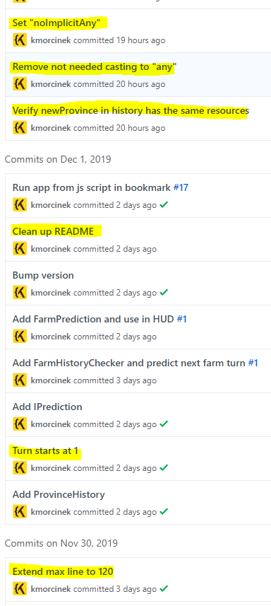

Git i okolice - Krzysztof Morcinek
- krzysztofmorcinek.wordpress.com
- gitwarsztaty.pl
- git
- vim
- .net
- code retreat
Trunk Based Development

Git Guitar Hero

Feature toggle (aka Feature Flag)
Aliasy
Modyfikacje aliasów można wykonywać w gitconfigu
[alias]st = statusci = commit -v
Albo za pomocą polecenia
git config --global alias.st statusgit config --global alias.ci 'commit -v'
Przykład użycia - skrócone wypisywanie statusu
git st
Inne przykłady aliasów
wdiff = diff --word-diff=plainrh1 = reset HEAD^ --hardamend = commit --amend -aC HEADstandup = log --since '1 day ago' --oneline --author krzysztof.morcinek@gmail.com # hack it with your emailcam = commit -amls = log --pretty=format:"%C(yellow)%h%Cred%d\\ %Creset%s%Cgreen\\ [%cn]" --decoratemt = mergetool
Mój ulubiony
syncm = !git checkout master && git pull --rebase && git checkout - && git rebase master
Ustawienia które warto zmienić
[pull]
rebase = true
[push]
default = current
[alias]
pushf = push --force-with-lease
Pomocne przy wrzucaniu nowego CR
GIT - oczyszczenie commitu przed wypushowaniem
- Fix typo
- Poprawa formatowania
- Zmiana namespace'u / folderu / pakietu
- DEMO czyszczenia przed CR

Mam tego fixa na moim branchu
Ktoś znalazł buga i go poprawił, ale czeka z tym na CR całego taska którego robił ...
... w międzyczasie ktoś inny trafia na ten sam bug i:
- Traci czas bo bug wydłuża mu development jego ficzera
- Traci czas debugując o co chodzi
- Traci czas fixując
Takie rzeczy od razu na mastera
Inne przykłady gdy komuś nasz fix może pomóc już! zamiast za 3 dni
Poprawka literówki w komentarzu - ktoś szukając znajdzie
Napisane fabryki do obiektów używanych do testowania - ktoś już może z nich skorzysta
Semantic merge
https://www.semanticmerge.com/
Dziękuję za uwagę
Życzę wszystkim możliwe najbardziej przewidywalnej pracy z gitem